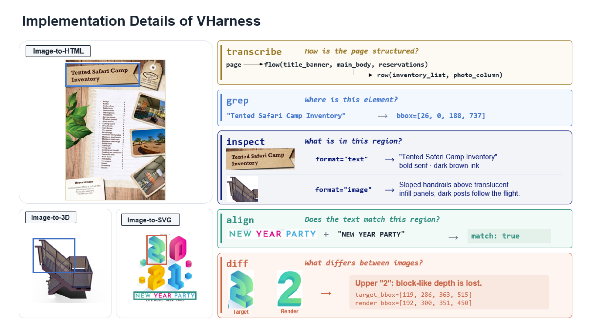

让 Agent 按一张设计图写网页，难点常常出现在“它以为已经像了”的时候：代码可以运行，但文字换行、曲线轮廓或三维比例仍有明显差异。如果负责写代码的模型没有看出这些差异，继续修改就缺少可靠方向。
本文解读 Vision-as-a-Tool: Visual Harness for Multimodal Agentic Coding，依据 2026 年 11 月 13 日提交的 arXiv v1。论文提出 VaaT 范式，并用 VHarness 将外部多模态模型封装为五种视觉动作。它改善了三类视觉编程任务的最终质量，同时明显增加推理投入；两方面需要一起理解。
一、课题解读：代码运行后，谁来检查它长得对不对
视觉编程把图片中的要求转成可执行代码。例如，从网页截图生成 HTML/CSS，从位图生成 SVG，从多视图生成 Blender 脚本。系统不仅要生成语法正确的代码，还要把它运行、渲染，再对照目标检查结果。
这形成一个反馈过程：观察目标 → 构建产物 → 渲染 → 找到差异 → 修改。差异判断会决定修改是否有效，也会影响何时停止。按钮的位置、字重、遮挡关系和三维部件的连接，都可能超出单一模型稳定辨认的能力。
一种设计是让编程模型直接看图，也可以配合裁剪、放大。另一种设计是将视觉判断交给外部模型，编程模型通过文字或结构化结果获得反馈。这为纯文本编程模型提供了视觉入口，也让已有视觉能力的模型有机会调用额外分析。评价这种设计时，需要同时看最终产物、反馈可靠性和额外成本。
二、相关文献解读：视觉输入与视觉反馈如何进入编程
| 工作或方向 | 已有探索 | 本篇进一步关注什么 |
|---|---|---|
| Design2Code | 将网页截图转代码，建立自动前端重建评测 | 从初始理解扩展到运行中的持续视觉诊断 |
| 3DCodeBench | 评价 Agent 用程序化代码重建 3D 物体 | 将视觉反馈工具放入多视图建模过程，检查几何是否改善 |
| 裁剪、缩放等视觉工具 | 帮助模型查看特定区域，最终仍由编程模型解释图片 | 将解释与比较本身作为可调用服务，返回可用于修改的信息 |
VaaT 是“把视觉推理当作工具”的组织方式；VHarness 是论文的具体实现；后端多模态模型则是工具使用的视觉能力来源。三者不能混作同一个新训练模型。这项工作主要通过 harness、工具接口和提示组织现有模型，并未提出新的模型训练算法。第 2 节
三、研究问题解读：工具化视觉能带来什么
我们将论文问题归纳为三组，作为后文方法与证据的阅读线索。
- 视觉判断能否从编程模型中分离出来？ 纯文本模型是否能依靠外部反馈完成视觉编程，有视觉能力的模型是否仍能受益？
- 怎样让外部视觉能力变成可稳定使用的接口？ 五个明确动作，相对一个自由提问的多模态接口有什么效果？
- 最终质量提升需要多少额外执行？ 改善来自什么样的修订过程，同等预算下是否仍有优势？
第三组中的严格预算归因是我们的进一步审视。论文报告了 token 与动作统计，但没有完成等费用主实验。
四、方法解读：从目标图到差异反馈，再到代码修订

第一步：提供目标、代码环境与渲染入口
任务输入包括目标图和工作目录。网页任务还提供已经人工检查过的图片素材，但不给布局坐标；SVG 任务只能写纯矢量代码；三维任务提供四个目标视图，由 Agent 写 Blender 脚本，统一渲染器负责相机、灯光、图像和 GLB 导出。
Agent 可以读文件、执行命令、写代码和修改代码。多模态 Agent 保留直接看图的能力；纯文本 Agent 则依赖工具返回的文字或结构化观察来理解图片。Appendix A.1
第二步：通过五个动作获得可执行的视觉信息
VHarness 使用持久 FastMCP 服务，向 Claude Code harness 注册五个 MCP 动作。主实验的视觉后端为 Gemini-3.8-Flash。
| 动作 | 输入与返回 | 对代码修改的作用 |
|---|---|---|
| transcribe | 读取目标，返回整体结构；2D 为布局树，3D 为部件、空间关系和材质描述 | 帮助建立初稿的组织结构 |
| grep | 图像与文字查询 → 匹配元素、类别、边界框等 | 找到要处理的元素及所在区域 |
| inspect | 图像或局部区域 → 文本、字体属性，或外观与几何细节 | 补充局部细节，减少凭印象编写 |
| align | 图像区域与待核对文字/说明 → 是否匹配的布尔判断 | 检查局部内容断言 |
| diff | 目标与当前渲染 → 差异描述或成对区域框 | 指出下一轮需要修订的偏差 |
这里的名字类似 shell 工具，但返回值来自模型推断。例如，grep 的提示要求返回 0–1000 归一化坐标的 JSON 边界框；inspect 的文字模式要求抄录文本并描述字体类别、字重、宽度、倾斜和字色；diff 可以按显著程度列出差异，也可以返回目标与渲染中对应元素的两组框。
尤其要注意 align 的范围。附录所示提示重点核对意义与措辞，并忽略字体。因此，某次 match=true 不代表字体、位置、整体美观和任务全部要求均通过。工具输出可帮助判断，不能自动等同于经过校准的客观真值。

第三步：按当前疑问选择工具，再修改和渲染
Agent 自行决定何时使用工具。它可以先获取整体结构，再定位局部元素，也可以在渲染后直接比较两张图，针对差异继续查询和修改。论文没有强制“每次五个动作各执行一次”。
例如，可以把它理解为一个教学流程：定位某段文字 → 核对换行和字重 → 改 CSS → 重新渲染 → 比较差异。这是我们帮助理解的示例，不是论文中每条轨迹遵循的固定算法。
两组都没有强制的最低迭代次数或相同 token 预算。基线依靠自身视觉判断完成，VHarness 组会利用外部反馈检查剩余差异，再由 Agent 决定后续执行。这既是方法的一部分，也使最终质量对照包含了继续投入计算的影响。第 2.3 节
第四步：保留产物与离线评价，区分工具反馈和最终指标
工具反馈用于运行中的修订。最终评测则对生成的 HTML、SVG 和三维网格，使用独立的图像或几何指标计算相似度。研究没有把 diff 自己说“像了”直接作为最终实验分数。
截至 2026 年 11 月 22 日，论文项目页指向的 官方仓库 仍只有代码审查中、计划发布的说明。本文核对了论文中的接口和提示，尚不能从该仓库检查完整实现或独立复跑。
五、实验设计与结果：最终产物更像，但投入也更多
主实验设置：三类任务、相同基础 harness
| 任务 | 样本与输入 | 最终输出 | 关键限制 |
|---|---|---|---|
| Image-to-HTML | 100 个复杂网页、杂志、海报、幻灯片截图与配套素材 | 自包含 HTML/CSS | 素材只有文件名和原始尺寸，没有位置及布局信息 |
| Image-to-SVG | 100 个复杂设计位图 | 独立纯矢量 SVG | 禁止嵌入图片、base64 和描摹位图 |
| Image-to-3D | 从 3DCodeBench 随机抽取的 100 例，每例四视图 | Blender Python、GLB 与对应渲染 | 用共享相机、灯光和材质流程比较 |
来源：第 3.1 节、Appendix A.1–A.2。作者发现原数据中部分图片与网格不对应，因此由官方材质脚本重新生成真值网格及四视图，使评价输入与真值对齐。
四个多模态编程模型都运行在 Claude Code harness 上，分别比较有无 VHarness。基线允许使用图像处理库辅助原生视觉；方法组另外获得五动作。纯文本 GLM-5.2 只评价有工具版本，因为它不能直接处理基线图片输入，且因预算只运行每任务随机 50 例。大多数模型设置 high reasoning、200K 上下文；GPT-6-astra 补充实验使用 low reasoning。第 3.2 节、Table 4
二维指标包括 SigLIP2、DINOv2 相似度和 LPIPS 距离，以及 SSIM、像素误差、边缘匹配。三维还测 Uni3D 相似度和归一化双向平方 Chamfer 距离；Chamfer 按官方协议比较四个规范 yaw 旋转并取最小值。这些是最终产物的自动相似度指标，不是人类审美评分、功能通过率或多次采样择优成绩。Appendix B.2
主实验结果：同模型加工具的配对结果
下表摘取二维任务的三个互补指标。箭头表示无工具 → 有 VHarness，每行来自该模型在相同 100 个任务上的汇总。
| 任务与模型 | SigLIP2 ↑ | LPIPS ↓ | Edge F1 ↑ |
|---|---|---|---|
| HTML · GPT-5.5 | 0.5773 → 0.6319 | 0.2277 → 0.1820 | 0.5389 → 0.5820 |
| HTML · GPT-5.6-sol | 0.6527 → 0.6859 | 0.1635 → 0.1414 | 0.6517 → 0.6936 |
| HTML · Claude Opus 4.8 | 0.3908 → 0.5077 | 0.4596 → 0.2974 | 0.3257 → 0.4316 |
| HTML · GLM-5.3-Flash | 0.6743 → 0.7553 | 0.1486 → 0.0937 | 0.7089 → 0.8059 |
| SVG · GPT-5.5 | 0.6265 → 0.6537 | 0.1537 → 0.1266 | 0.6141 → 0.6478 |
| SVG · GPT-5.6-sol | 0.6703 → 0.6830 | 0.1087 → 0.1001 | 0.6985 → 0.7020 |
| SVG · Claude Opus 4.8 | 0.4774 → 0.5502 | 0.3759 → 0.2605 | 0.3165 → 0.4360 |
| SVG · GLM-5.3-Flash | 0.6887 → 0.7095 | 0.0943 → 0.0778 | 0.7262 → 0.7671 |
来源：Table 1(a–b)，PDF 第 5 页。越高/越低方向按列标注，不将不同指标相加。
| 3D 任务模型 | DINOv2 ↑ | Uni3D ↑ | Chamfer ↓ |
|---|---|---|---|
| GPT-5.5 | 0.6622 → 0.7496 | 0.7575 → 0.7933 | 0.0094 → 0.0058 |
| GPT-5.6-sol | 0.7046 → 0.8122 | 0.7738 → 0.8496 | 0.0157 → 0.0035 |
| Claude Opus 4.8 | 0.5342 → 0.7017 | 0.7129 → 0.7863 | 0.0339 → 0.0086 |
| GLM-5.3-Flash | 0.7593 → 0.8190 | 0.8154 → 0.8545 | 0.0056 → 0.0035 |
来源：Table 1(c)，同样每组 100 例。
主表中，四个多模态模型在三任务各项报告指标上均改善，支持工具反馈能提高这些设置下的最终相似度。幅度并不相同，例如 GPT-5.6-sol 的 SVG Edge F1 只增加 0.0035，三维 Chamfer 则从 0.0157 到 0.0035。论文未为主结果报告置信区间或多随机种子误差，也未测真实应用的可访问性、交互正确性或三维物理可用性。
纯文本模型：用相同 50 例再比较
直接拿 GLM-5.2 的 50 例与其他模型的 100 例比较可能受样本组成影响。附录补充同一 50 例的结果，下面只摘取一项二维距离和一项几何距离。
| 同一子集上的设置 | HTML LPIPS ↓ | SVG LPIPS ↓ | 3D Chamfer ↓ |
|---|---|---|---|
| GPT-5.5，无工具 | 0.2129 | 0.1546 | 0.0100 |
| GPT-5.6-sol，无工具 | 0.1694 | 0.1137 | 0.0172 |
| GLM-5.2，有 VHarness | 0.2028 | 0.1219 | 0.0092 |
来源：Table 8，Appendix C.2。每任务相同 50 例，不同指标的优劣顺序可能不同。
这支持纯文本模型通过外部视觉服务完成任务，并达到有竞争力的部分指标。它没有提供 GLM-5.2 自身的无工具配对增益，也不能推出它在所有指标上超过多模态模型。系统能看图的能力仍来自被调用的多模态后端。
接口消融：五动作相对自由提问
GPT-5.6-sol 在 100 例三维任务上比较三个设置。Freestyle 使用同一个 Gemini-3.8-Flash 后端，但只有一个自由提问 MCP 接口，并附使用示例。
| 指标 | 无工具 | Freestyle | 五动作 VHarness |
|---|---|---|---|
| SigLIP2 ↑ | 0.6400 | 0.6677 | 0.7212 |
| DINOv2 ↑ | 0.7046 | 0.7481 | 0.8122 |
| LPIPS ↓ | 0.1211 | 0.1028 | 0.0634 |
| Uni3D ↑ | 0.7738 | 0.8255 | 0.8496 |
| Chamfer ↓ | 0.0157 | 0.0070 | 0.0035 |
来源：Table 3，第 3.4 节。
自由接口已有改善，五动作版本进一步提高，支持明确查询与输出约定在这组实验中有价值。但这不是逐个移除动作的消融，尚不能证明每个动作都不可缺少，也没有隔离相同调用次数与计算预算下的接口贡献。
另一个补充实验让 GPT-6-astra 同时担任编程者和视觉工具后端，在 100 例 SVG 上，SigLIP2 从 0.7368 到 0.7529，LPIPS 从 0.0572 到 0.0473。这支持相同模型能力也能受益于工具化组织与额外调用，但还不能将收益完全归因于能力分离。Table 2
成本与过程：更多反馈也带来更多执行
下表是 GPT-5.6-sol 编程 Agent 每例累计记录的输出 token 均值。
| 任务 | 无工具 | 有 VHarness | 约为原来的多少倍 |
|---|---|---|---|
| HTML | 23,825 | 62,005 | 2.60 倍 |
| SVG | 16,301 | 64,841 | 3.98 倍 |
| 3D | 17,918 | 104,543 | 5.83 倍 |
来源：Table 5，Appendix C.1。倍数为本文按表值计算。该表未覆盖外部视觉后端的全部调用与输入成本，不能直接当美元费用。
纯文本 GLM-5.2 的 SVG 累计输出均值达到 1,971,312 token/例。它是多轮调用累计量，不能当作单次上下文长度。该模型在 HTML、SVG、3D 上平均调用视觉动作分别为 733.0、366.4、443.8 次/例。Tables 5–6
轨迹分析显示，VHarness 在相同早期渲染轮次已有更高相似度，之后也会继续修订；基线停止后的虚线只是延长最后一个分数，没有新增执行。相同渲染次数仍不等于相同 token、视觉调用或耗时。当前证据支持“这个完整运行方案能得到更好的最终产物”，等费用下的优势还有待验证。Figure 4、Appendix C.3
六、我们自己的思考
课题思考：这个领域在研究什么
Agent 的能力取决于模型，也取决于它能观察什么、怎样表达疑问，以及收到反馈后能否采取有效修改。VHarness 的启发在于，将视觉问题整理为结构、位置、属性、断言和差异，让反馈进入实际产物修订。对科研 Agent，同样可以思考如何把图表检查和实验可视化分析变成有明确返回格式的工具。
局限问题思考：目前还存在哪些问题
- 质量与计算尚未充分分离。 输出 token 和工具调用明显增加，缺少相同费用、时间和预算的完整对照。
- 工具反馈本身也会错。 边界框、文字和差异来自模型，布尔判断的范围有限，论文未系统测量错误反馈怎样影响后续修改与停止。
- 任务和复现范围有限。 当前主要是静态页面、矢量图和单个物体，缺少交互状态与功能评价；公开仓库尚不能复跑，也没有逐动作消融。
解决方案思考：这些问题有哪些解决方向
- 画出质量与总投入的曲线。 固定总费用或运行时长，比较原生视觉、自由接口和五动作，计入编程者、后端视觉模型、渲染和失败重试。
- 让反馈接受独立核对。 记录每次视觉判断和对应修改，抽样标注误报、漏报及有害修订；把文字、位置、样式、功能断言分别验证，并研究不确定时的停止规则。
- 扩展到可复现的动态任务。 发布代码、任务和运行配置，逐动作移除测试；增加多状态网页、交互回放和时间一致的三维场景，用视觉质量与功能正确性共同评价。
依据 论文 v1 PDF、项目页 与上述仓库快照。本文为独立阅读分析。Figures 1、3 作为方法讨论所需的少量原图引用，版权归 Haolin Yang 等原作者，仅裁去页面外围、未改绘；arXiv 页面标注的是永久非独占分发许可，本文不将其误记为 CC 授权。表格为选取的实验数据，倍数、解释和后续方向属于本文分析。